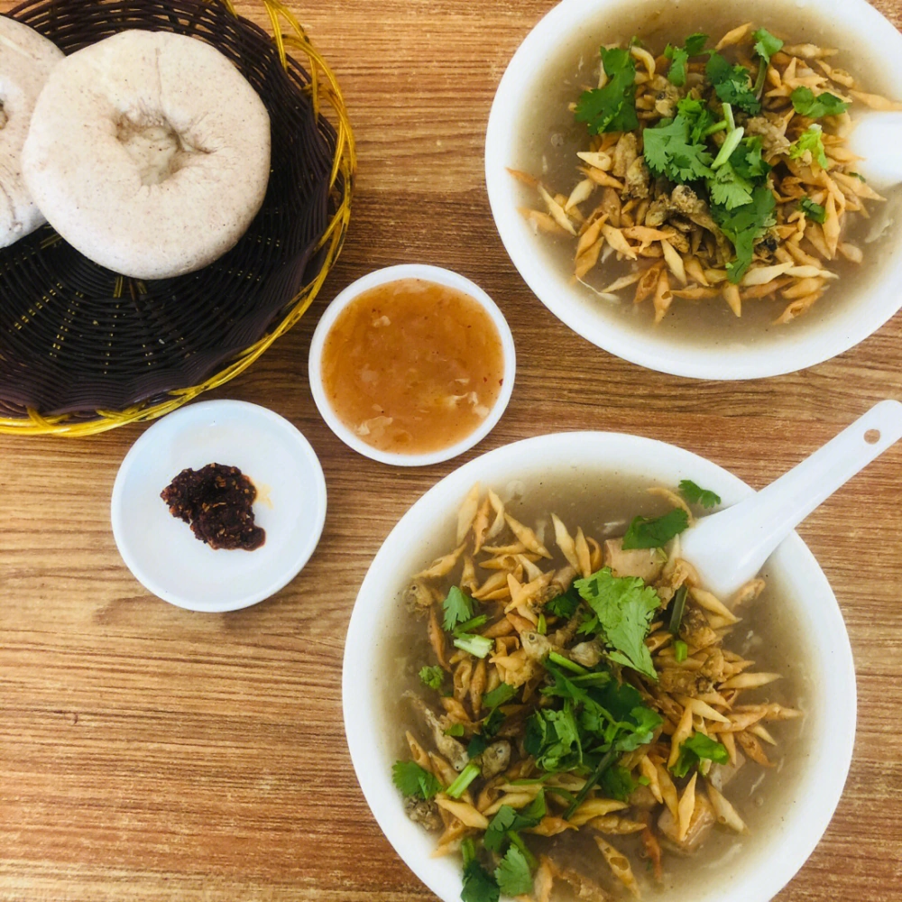

- 美食介绍： 在曹县，小鱼汤只有在早上才能吃到，算是早点。喝小鱼汤一般配以杂面窝窝头、辣椒糊涂，根据个人爱好，还可在鱼汤锅里打上一个荷包蛋。一顿饭价格加起来一般不超过五元，实惠又营养。一碗小鱼汤，有岁月的积淀和承载，有一脉相承的家乡情怀，有民间智慧的炉火纯青，即使再多的山珍海味也无法替代。
- 口感描述：小鱼汤“早喝咸汤，如喝参汤。”其既综合了小鱼、豆腐、炸面叶的美味，又有汤底的升华，营养均衡，口感丰富，味道丰美，喝一口引人入胜， 喝一碗杂念顿消，满腔满腹的的称心如意，幸福感满满。